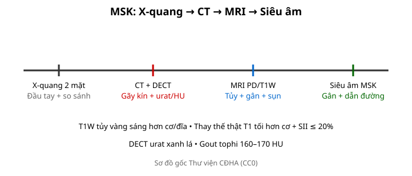
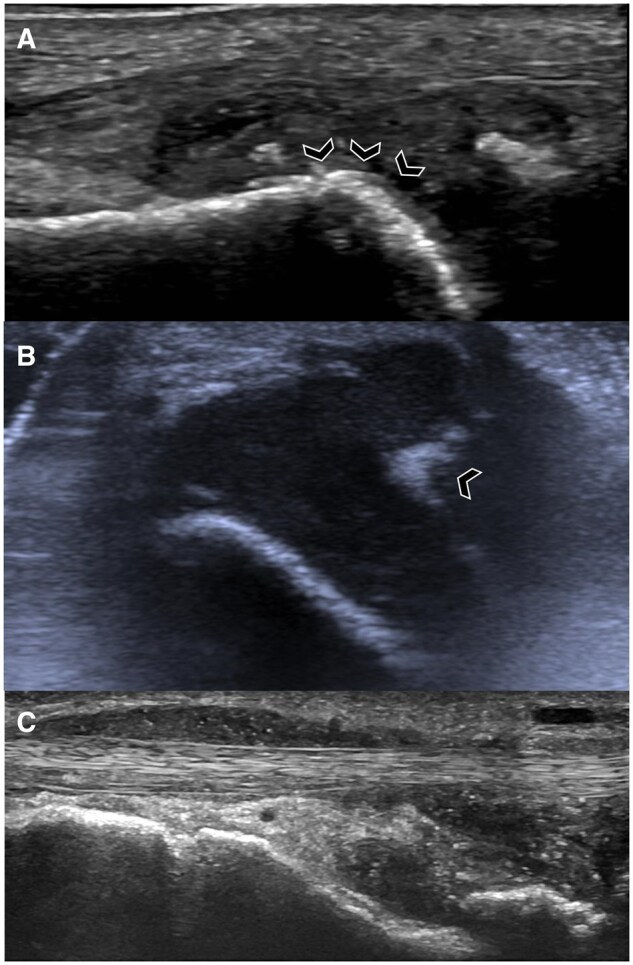
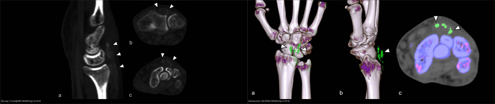
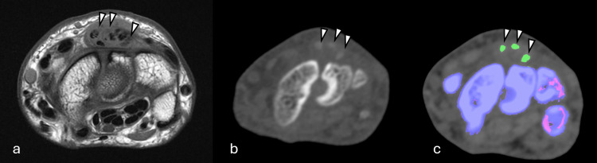
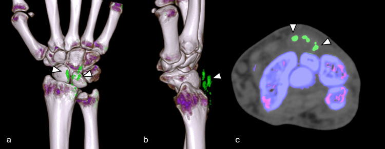
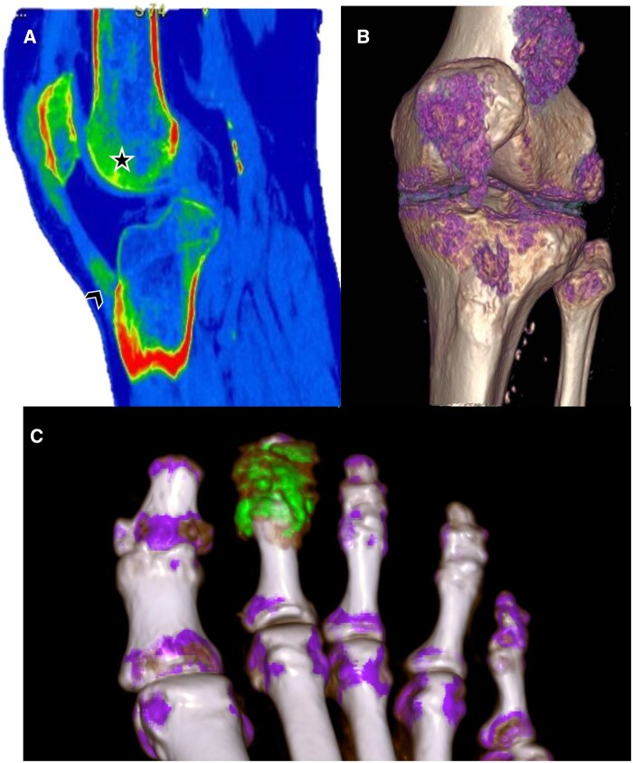
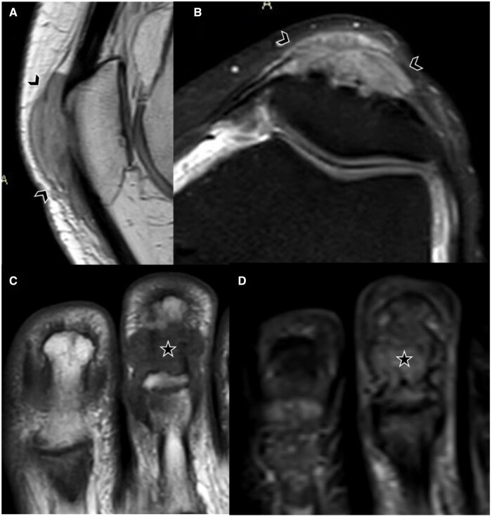

301 — Protocol MSK: X-quang, DECT, MRI & siêu âm / MSK protocol
Tags: pattern:protocol-msk vung:co-xuong-khop protocol:XR-CT-MRI-US
Mức chắc chắn (certainty): tổng hợp y văn (literature synthesis) — nhóm tự biên từ y văn mở, chưa gắn ca nguyên văn đơn lẻ.
1. Tổng quan — đúng phương thức mới thấy bệnh + T1W là chuỗi sống còn
- X-quang 2 bình diện là đầu tay mọi đau-sưng-chấn thương xương khớp — TẠI SAO phải 2 mặt + so sánh bên đối diện: 1 mặt bỏ sót 10–50% (trật vai sau, gãy thuyền, bờm mỡ).
- CT lát mỏng + DECT (hai mức năng lượng): gãy kín đáo + phân biệt urat (xanh lá) vs canxi — TẠI SAO DECT thấy tinh thể: urat và canxi suy giảm tia X khác nhau ở 2 mức năng lượng.
- MRI PD fat-sat + T1W: tủy vàng trưởng thành (80% mỡ) T1W luôn sáng hơn cơ/đĩa đệm — thay thế thật (u/mủ) T1 tối hơn cơ + SII ≤ 20%.

Sơ đồ gốc Thư viện CĐHA, CC0.2. Gamut chỉ định theo phương thức (Gamut)
- X-quang 2 mặt + stress/so sánh: gãy, trật, OA/RA, u (Lodwick) — đầu tay.
- CT + DECT: gãy kín (mâm chày, gót, thuyền), urat vs canxi, nidus < 2 cm.
- MRI PD/T1W + gadolinium: tủy, gân, sụn chêm/viền, u lan mềm, nhiễm trùng.
- Siêu âm MSK: gân Achilles/chóp xoay + tràn dịch + dẫn đường chích/sinh thiết.

Siêu âm đầu dò cao tần — (A) tràn dịch khớp bàn chân chứa hạt urat tăng echo (MSU aggregates) + dấu "mặt đôi" (double contour sign) (mũi tên, lớp tinh thể urat phủ trên sụn); (B) hạt urat trong dịch khớp và dọc bao khớp; (C) dấu "bão tuyết" (snowstorm) trong bao gân. Nguồn: Wali L et al., Rheumatol Adv Pract 2025, PMC12137905 Fig. 2, CC BY-NC 4.0 (nguyên bản).3. Bảng phương thức-chỉ định
| Phương thức | Tìm gì | Chốt vào (rule-in) | Chốt loại (rule-out) | Ngưỡng |
|---|---|---|---|---|
| X-quang 2 mặt | Gãy + Lodwick + khe khớp | Bờm mỡ sau/mỡ-máu = gãy phạm khớp | 1 mặt bình thường ≠ loại trừ | So sánh đối bên |
| CT + DECT | Gãy kín + urat | Mỡ khớp −50 đến −100 HU; tophi 160–170 HU xanh lá | Không vỡ vỏ → bong gân | Lát mỏng 0,5 mm |
| MRI PD/T1W | Tủy + gân + sụn | T1 tối hơn cơ + SII ≤ 20% = thay thế thật | T1 ≥ cơ + SII > 20% → phù/tủy đỏ | TE dài > 60 ms (magic angle) |
| Siêu âm | Gân + dịch + canxi | Mất sợi + dịch = đứt; double contour = gout | Sợi còn → viêm | Đầu dò ≥ 12 MHz |

Trái: CT cửa sổ xương cổ tay — ổ tăng đậm độ (high-density foci) dọc gân duỗi = tophi (không phân biệt được urat với canxi). Phải: DECT tô màu — acid uric hiện màu xanh ở khoang duỗi IV = gouty tophi (chốt nguyên lý: hai mức năng lượng tách urat khỏi canxi). Nguồn: PMC12603964 Fig. 1 & 2, Cureus 2025, CC BY 4.0. Ảnh ghép letterbox, giữ nguyên tỷ lệ.
*Cùng mặt cắt cổ tay: tophi giảm–trung gian tín hiệu trên T1W MRI (a), hơi tăng đậm độ trên CT (b), hiện rõ nhất trên DECT tô màu (c) — minh họa vì sao đúng phương thức mới thấy bệnh. Nguồn: PMC12603964 Fig. 4, Cureus 2025, CC BY 4.0.*4. Protocol chuẩn
- Chấn thương: X-quang 2 mặt → CT khi mỡ-máu/mỡ sau; khớp mạn: X-quang + siêu âm → MRI; u: X-quang (Lodwick) → MRI toàn tổn thương + ngực (di căn).
flowchart TD
A[Đau/sưng/chấn thương MSK] --> B{X-quang 2 mặt rõ?}
B -->|Chưa rõ + mỡ-máu| C[CT/DECT]
B -->|Tủy/gân/sụn/u| D[MRI PD/T1W]
B -->|Gân nông/dịch| E[Siêu âm + chích]
5. Cạm bẫy
- 1 mặt X-quang bỏ sót trật sau/gãy thuyền — 2 mặt + chuyên biệt là luật.
- MRI không T1W mất chuẩn tủy sống còn — PD sáng không phân biệt thay thế/phù.
- Siêu âm phụ thuộc người làm — gân sâu (chậu, háng) vẫn cần MRI.
6. Tự lượng giá — Blind Quiz
Ca 1 — Bệnh nhân sưng–đau cổ tay mạn, CT thấy ổ tăng đậm độ dọc gân duỗi. Đọc DECT, trả lời tại sao phải chọn đúng phương thức.

- Hỏi: ổ đậm độ thô trên CT là urat hay canxi? DECT cho biết gì thêm? Vì sao MRI T1 có thể không thấy?
Bấm để hiện đáp án (findings + chẩn đoán)
- Dấu hiệu (findings): DECT tô màu (3D a,b + axial c) — acid uric hiện màu xanh ở khoang duỗi IV = gouty tophi.
- Chẩn đoán (diagnosis): gout (tophi). CT đậm độ thô không phân biệt urat/canxi; DECT tách được vì urat và canxi suy giảm tia X khác nhau ở 2 mức năng lượng; MRI T1 chỉ thấy khối tín hiệu trung gian, không đặc hiệu.
- Nguồn: PMC12603964 Fig. 2, Cureus 2025, CC BY 4.0.
Ca 2 — Đau gối chưa rõ nguyên nhân: DECT khớp gối (hình dưới) có gì; cần tương quan gì?

Bấm để hiện đáp án (findings + chẩn đoán)
- Dấu hiệu (findings): DECT — lắng đọng tinh thể MSU (monosodium urate) hiện màu xanh, cả trong khớp (dấu sao) lẫn trong gân (mũi tên).
- Chẩn đoán (diagnosis): gout — DECT định vị ổ urat trong khớp và gân; lưu ý artefact do khớp nhân tạo (beam-hardening) có thể làm giảm chất lượng DECT (Fig. 7 bài gốc) — phải đọc kèm bối cảnh.
- Nguồn: Wali L et al., Rheumatol Adv Pract 2025, PMC12137905 Fig. 5, CC BY-NC 4.0 (nguyên bản).
Ca 3 — Cùng bệnh nhân Ca 1 nhưng nhìn hình dạng đầu tophi trên MRI. Mô tả và phân biệt với khối u.

Bấm để hiện đáp án (findings + chẩn đoán)
- Dấu hiệu (findings): khối dạng tiểu thùy tín hiệu trung gian (A,B) bào mòn mặt trước xương bánh chè = tophus; (C) khối trong khớp bào mòn và phá hủy khớp bàn đốt II/dòng tận cùng; (D) thay đổi tín hiệu khu trú + phù ít trên chuỗi nhạy dịch.
- Chẩn đoán (diagnosis): gouty tophi. MRI mô tả vị trí/bào mòn nhưng không đặc hiệu tinh thể — chốt bằng US (double contour) hoặc DECT (urat xanh); phân biệt khối u sụn/mềm bằng bối cảnh + acid uric.
- Nguồn: Wali L et al., Rheumatol Adv Pract 2025, PMC12137905 Fig. 8, CC BY-NC 4.0 (nguyên bản).
Ca 4 — Đối chiếu cuối: bên nào chỉ ra acid uric? Vì sao "không loại trừ bằng X-quang/CT thô"? (Bảng mục 3.)
Bấm để hiện đáp án (findings + chẩn đoán)
- Trái = CT thô: ổ tăng đậm độ không đặc hiệu (có thể urat, canxi, máu). Phải = DECT: acid uric tô xanh → urat.
- Chốt: DECT là chuỗi tô màu tinh thể (urat xanh lá, canxi xanh dương); 1 mặt / CT thô bình thường ≠ loại trừ.
- Nguồn: PMC12603964 Fig. 1 & 2, Cureus 2025, CC BY 4.0.
Bài liên quan chéo
- 300 – Tổng quan MSK
- 310 – Xương phụ (vỏ kín)
- 320 – Gãy & trật khớp (mỡ-máu)
Không dùng để chẩn đoán độc lập khi chưa có người hướng dẫn.